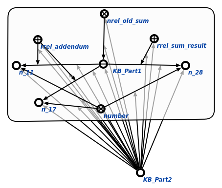
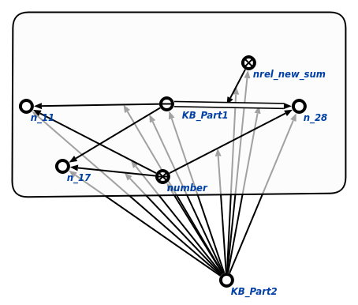

Команда замены по правилу предназначена для выполнения корректировки раздела базы знаний в соответствии с заданным правилом. Первым аргументом команды является раздел базы знаний, в котором необходимо произвести корректировки, опираясь на заданное правило. Результатом выполнения команды является исправленный в соответствии с правилом раздел. Вторым аргументом команды является импликативное утверждение, посылка и следствие которого отражают неправильную конструкцию и результат исправления этой конструкции. Пример замены по правилу показан ниже (слева - исходный раздел базы знаний, справа - исправленный в соответствии с правилом):

